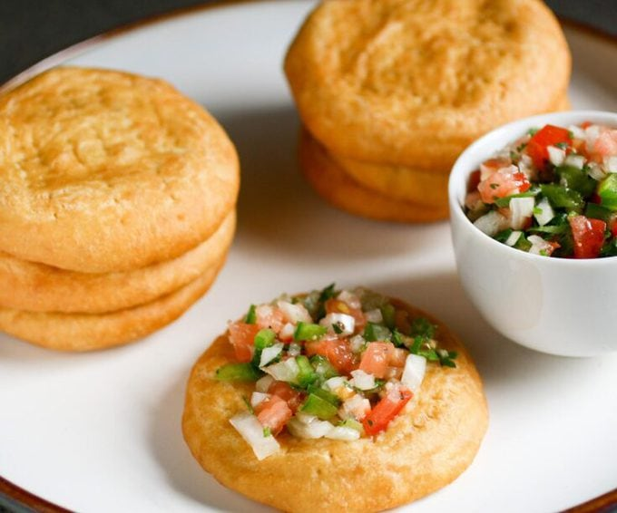

Chilean Sopaipillas Recipes

These Chile Sopaipillas are amazing and a true Chilean treasure.
They are similar to a doughnut. In Chile they are typically made with pumpkin or squash. I just used pumpkin puree from the can and the results were delicious.
These would be wonderful for breakfast too! They also make a savory version that is typically served as bread with a meal and butter or pebre is spread on the top.
Ingredients
- 2 cups self-raising flour
- ¼ teaspoon salt
- 1 cup cooked pumpkin
- ¼ cup unsalted butter melted
- 1 cup water
- 1 cup brown sugar
- 1 stick cinnamon
- 1/2 orange cut into 8 pieces
- Vegetable oil for frying
Steps
- Combine flour and salt in a large bowl, set aside.
- Combine cooked pumpkin or puree and butter in a separate bowl and stir until combined.
- Make a well in the flour mixture, add pumpkin mixture and stir and knead until combined. Add a little water if it is too dry. When the dough cleans the bowl it is perfect.
- On a floured surface, roll out the dough to about ¼ inch thick, use a cookie cutter or small bowl to make rounds about 3 inches in diameter.
- Combine brown sugar, water cinnamon, and orange slices in a pot over medium heat and bring to a boil. Boil for about 4 minutes until slightly thickened. Remove from heat and set aside.
- Heat oil to 350 degrees in a wok, frying pan or deep fryer, add pastry rounds a few at a time and fry until puffed and golden, turning halfway through, about 1 to 2 minutes per side. Drain on a paper towel.
- Working a few at a time, add fried sopaipillas to syrup, remove and serve immediately with some extra syrup.